前歯だけ、が気になる。
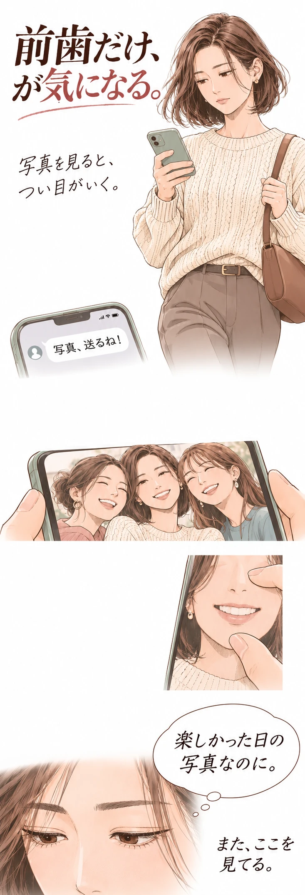
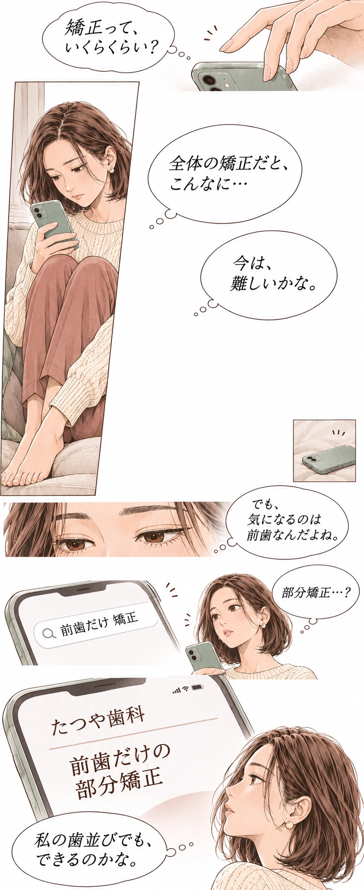


このマンガは創作です。実際の患者様の体験談ではありません。人物・診療場面はイメージです。
たつや歯科の部分矯正
気になる前歯の見た目やガタつき。部分矯正が適しているかは、歯並びや噛み合わせなどを歯科医師が診断して判断します。
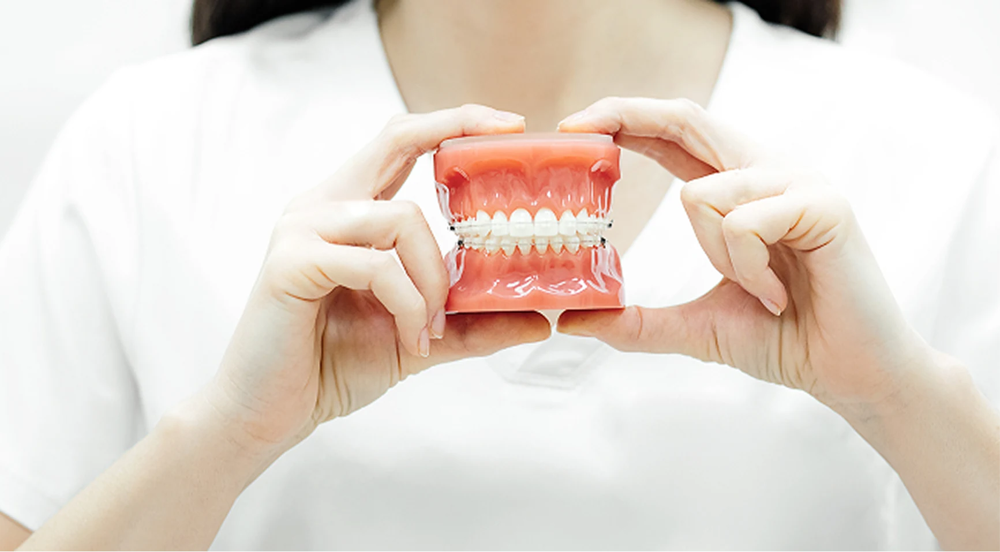
たつや歯科はワイヤー部分矯正の専門医院です。マウスピースだけでは対応が難しい歯並びについても、ワイヤー治療を組み合わせるなど、状態に合わせた治療をご提案します。
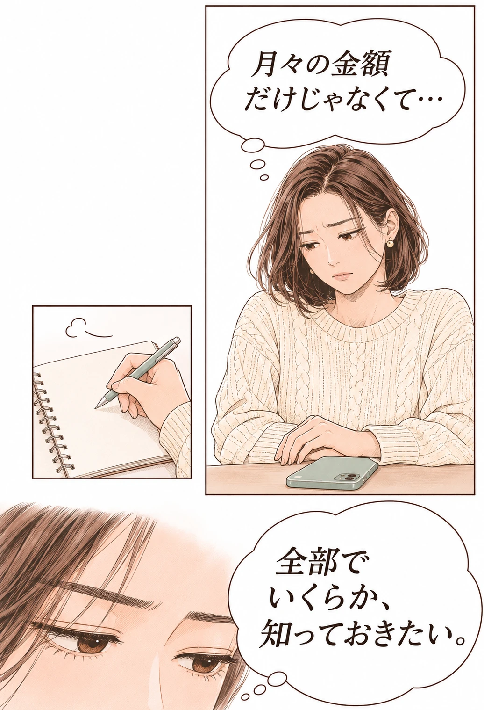
費用のこと
ワイヤー部分矯正
210,000円〜 （税抜）
※別途初診料3,000円がかかります。
治療費に必要な処置料・調整料・リテーナー代を含むトータルフィー制度。治療費の総額は診断・治療計画により異なります。
医院が独自に行う院内分割払い。信販会社の書類審査は不要です。具体的な支払い回数・金額は医院へご確認ください。
初診料の税込・税抜区分は現行LPに記載がないため、ご予約時に医院へご確認ください。
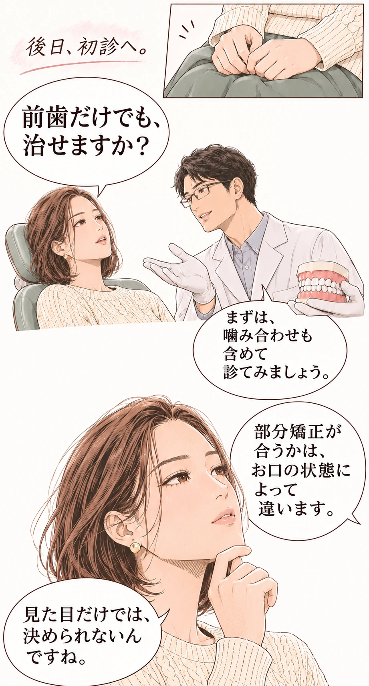
治療期間のこと
現行LPでは部分矯正の目安を約3〜6ヶ月と案内しています。一方で、掲載症例には8〜12ヶ月の治療例もあります。
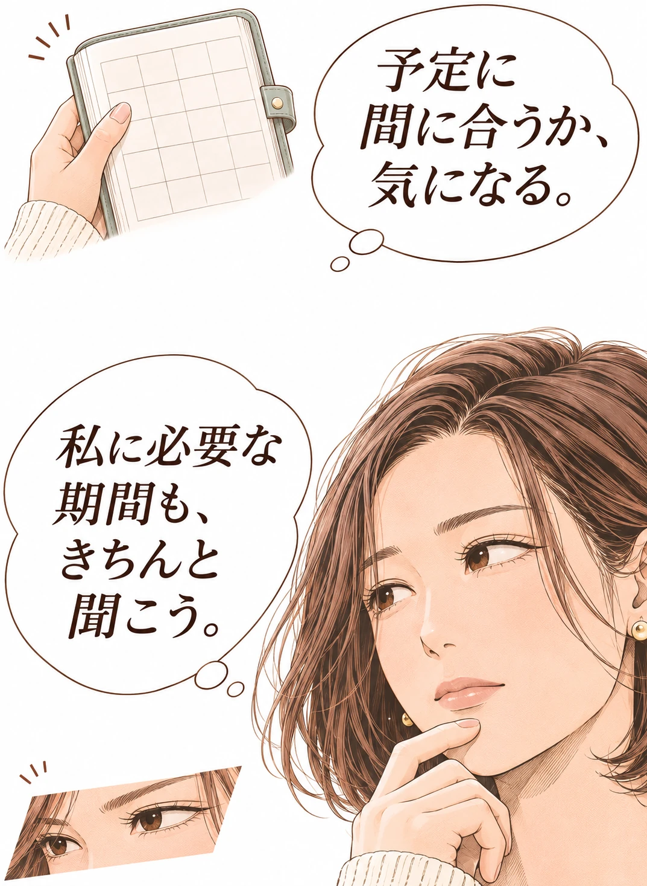
治療期間には個人差があります。ご希望の時期がある方も、まずはお口の状態に合わせた治療計画をご確認ください。
実際の症例
以下は現行LPに掲載されている症例です。同じ結果・費用・期間を保証するものではありません。
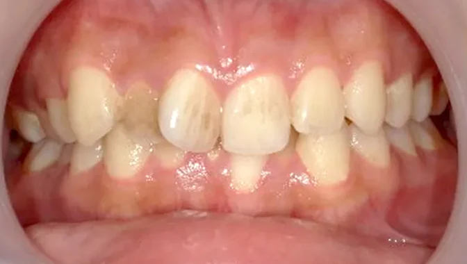
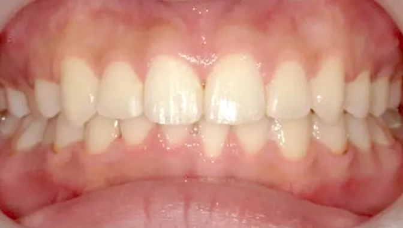
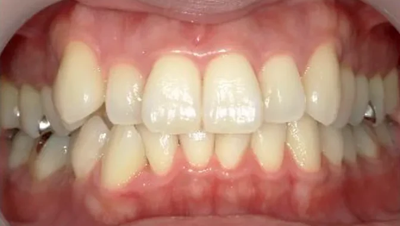
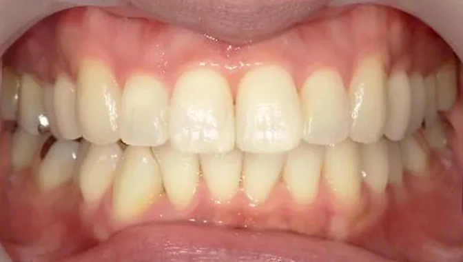
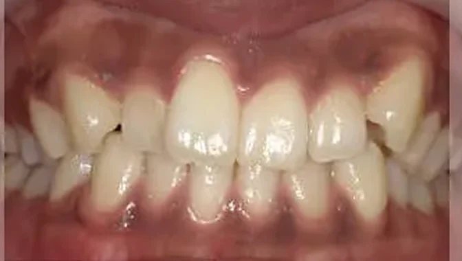
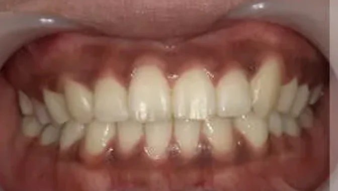
矯正治療には歯根吸収や後戻りなどのリスクがあります。症例ごとの治療回数・詳細な治療内容は医院へご確認ください。
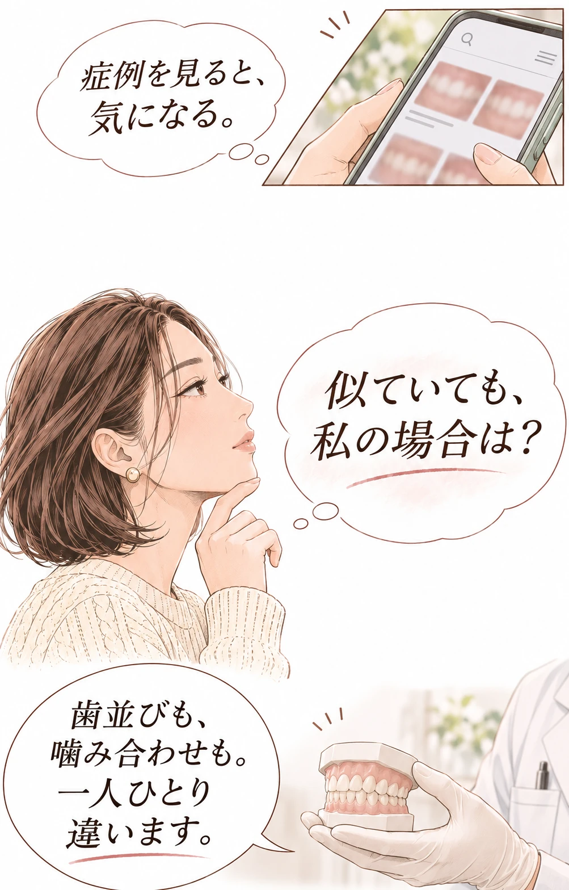
歯科医師が直接診断します
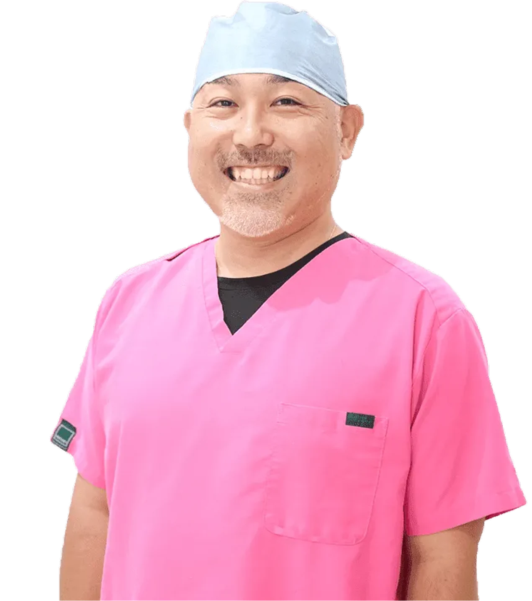
院長 鈴木 達也
自分の歯並びなら、
どこをどう直すのがベストなのか。
患者様ご自身だけで判断するのは簡単ではありません。たつや歯科では、歯科医師が骨格や歯並びを直接丁寧に診断します。
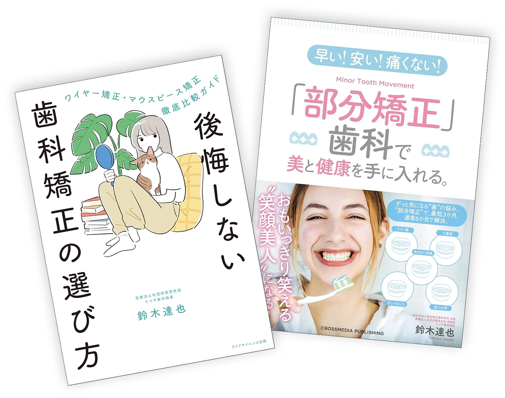
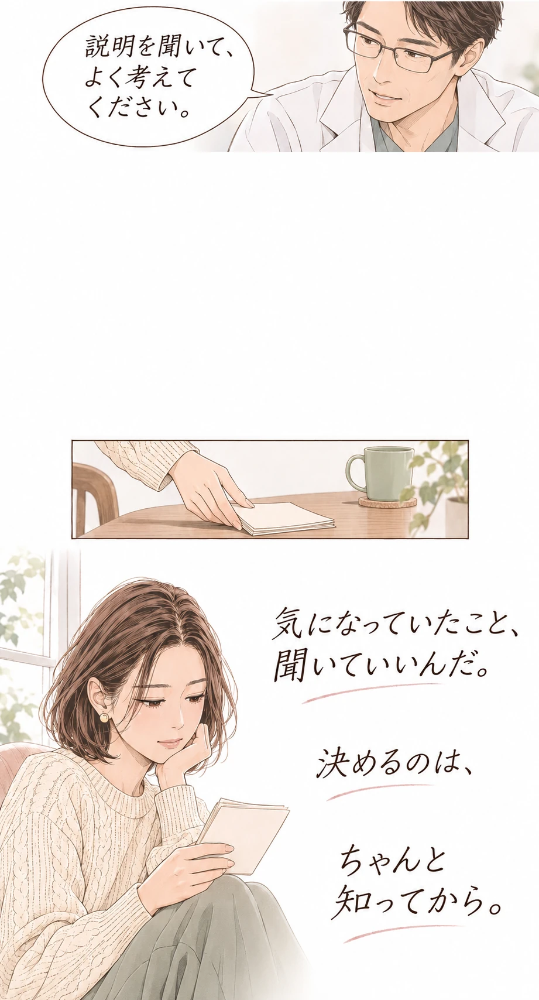
よくある質問
初診の方はWEBまたはお電話で予約できます。再診予約はお電話のみの対応です。
お早めの予約をご希望の場合は、お電話で最短の空き状況をご確認ください。キャンセル等による空きがWEBへ反映されていない場合があります。
治療期間は口腔内の状態により異なり、検査前には判断できません。矯正期間中は基本的に装置を一時的にも外せません。挙式を控えている方は直接お電話でお問い合わせください。
必ずしも部分矯正が不可能というわけではありません。被せ物やお口の状態によって異なるため、精密検査での確認が必要です。
アクセス
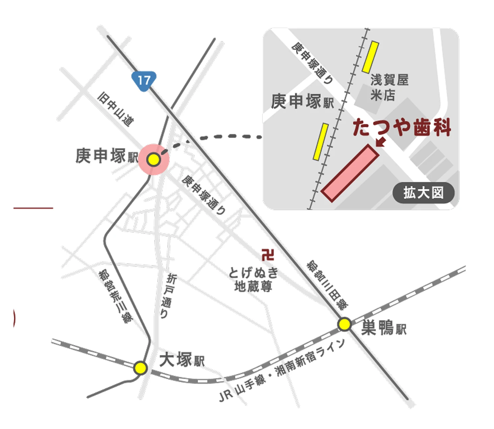
〒170-0001
東京都豊島区西巣鴨2-7-8
ティジィハウス1F
ご自身に合う治療・期間・費用は、
歯科医師の診断のうえでご確認ください。
※別途初診料3,000円がかかります。
初診の方専用0120-915-388タップして電話する矯正治療には歯根吸収や後戻りなどのリスクがあります。